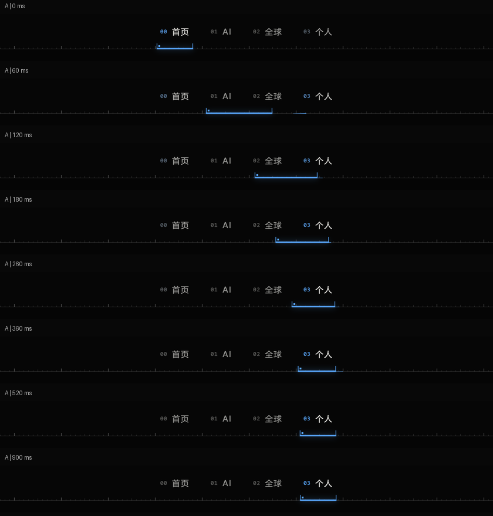
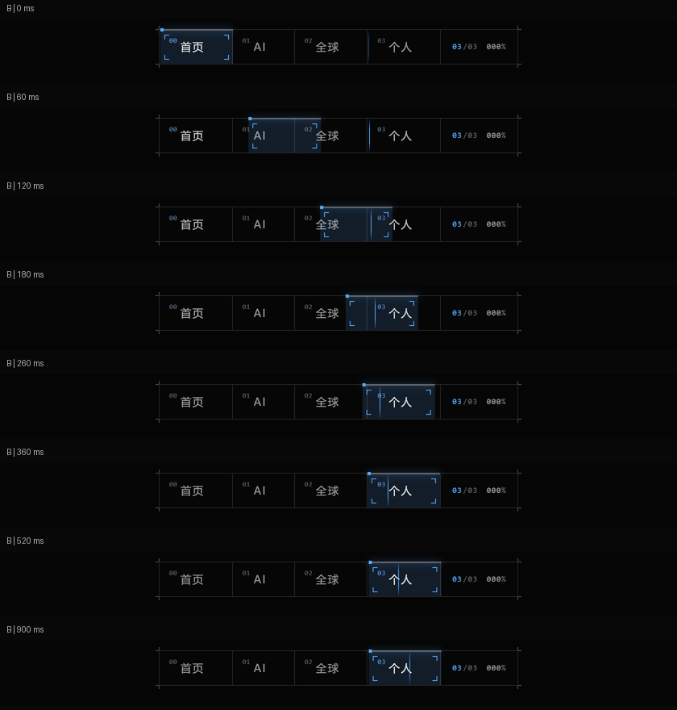
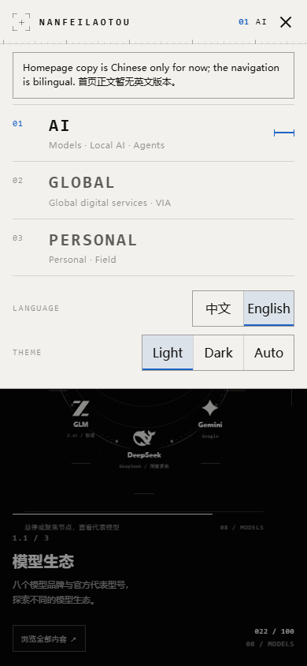
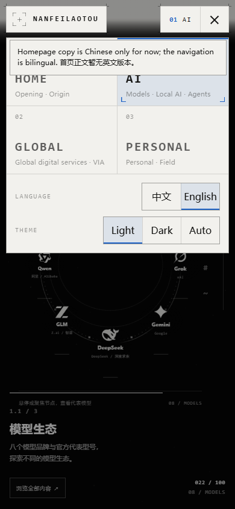
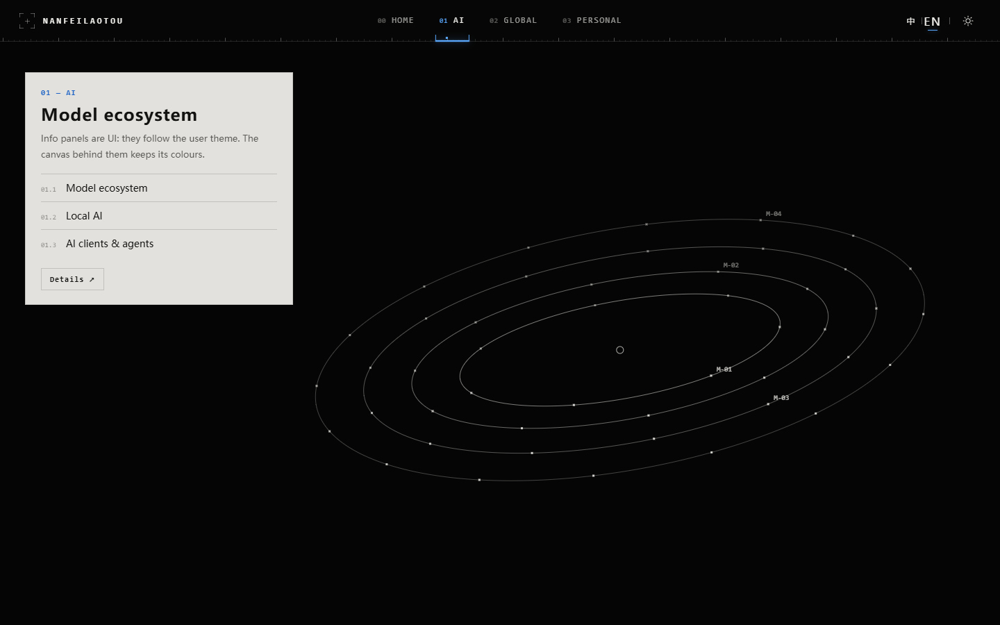
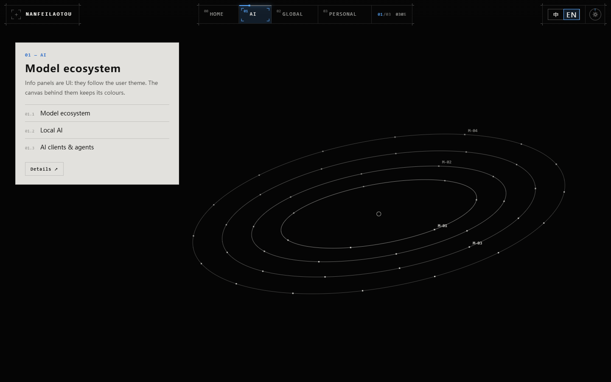
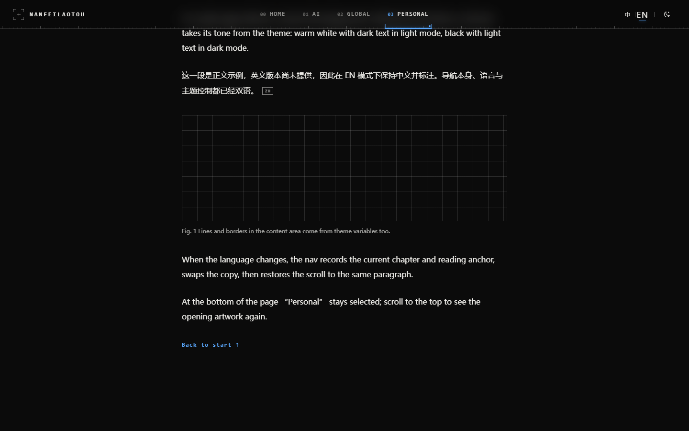
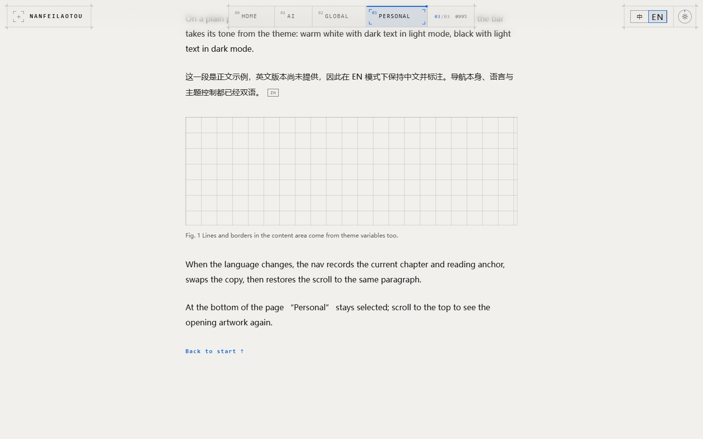

顶部导航 · A「刻度」 / B「舱窗」
基于正式 main 7b7e53b 的独立叠加预览。下方为 Windows 实际浏览器截图；未替换正式顶栏、Shader、时间轴或 Global 动画。
真实首页稳定画面
1920 / 1366 保留 AI、暖白、卡片三组；全部七组画面见 1440。顶栏的精确白色覆盖率接口仍待正式集成，当前叠加页沿用原型关键帧近似。
 A · 刻度
A · 刻度 B · 舱窗
B · 舱窗标签切换 · 60Hz 固定步进

A：0 / 60 / 120 / 180 / 260 / 360 / 520 / 900ms
B：同一组时间点，DPR 2 截图缩略排版手机菜单

A · EN / 浅色菜单
B · EN / 浅色菜单语言与主题示例
下面是独立实验页的内容示例。真实 main 正文未翻译、信息面板未主题化；叠加页只切导航语言 / 偏好并如实提示。

A · 实验 AI 面板
B · 实验 AI 面板
A · 内容页深色
B · 内容页浅色完整功能结果 · 轨迹 / 过冲原始数据 · 实际 GPU 与 CPU 记录 · 原始交接